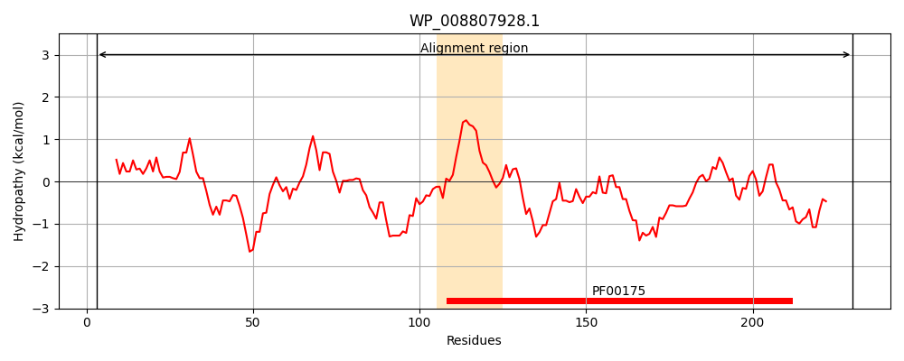
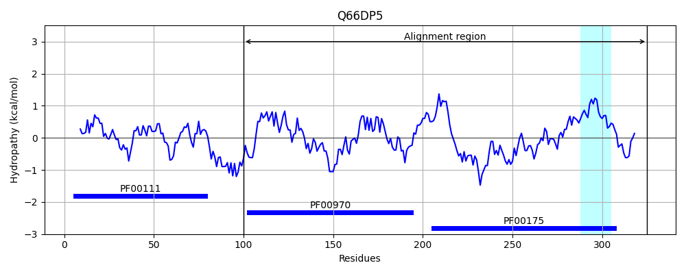
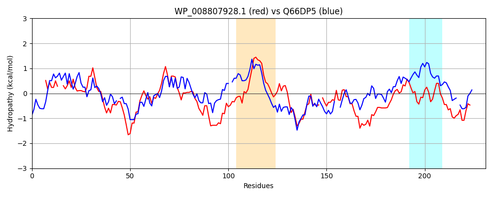

Hit Accession: Q66DP5
Hit TCID: 5.B.1.3.1
Hit Description: gnl|BL_ORD_ID|14711 gnl|TC-DB|Q66DP5|5.B.1.3.1 CDP-6-deoxy-L-threo-D-glycero-4-hexulose-3-dehydrase reductase OS=Yersinia pseudotuberculosis serotype I (strain IP32953) GN=ascD PE=1 SV=3
Mach Len: 231
e:0.000000
Query TMS Count : 1
Hit TMS Count: 1
TMS-Overlap Score: 0.000000
Predicted Substrates:CHEBI:10545;electron
BLAST Alignment:
Score: 316 , Bit scores: 126 bits, E-value: 6.8e-35, Alignment length: 231, Percentage identity: 32
Query: 3 TLSCKVTSVEAITD--TVYRVRLVPEAAFSFRAGQYLMVVMDERDKRPFSMASTPSEHEFIELHIGASELNLYAMAVMDRILKEREIEVDIPHGEAWLRDDEDRPLILIAGGTGFSYVRSILLTALARNPDRDIAIYWGGREAKHLY-DLAELEALSIKHPNLRIEPVVEQPEEGWRGRSGTVLTAVLQDYGTLAEHDIYIAGRFEMAKIARDLFCNERGAREDRLFGDAF 230
T CK+ S+E + + + +RL P A + AGQY+ ++++ + +R +S+A+ P + IELH+ +++ + + + ++ + ++ P G ++R+D + P++ +AGGTGF+ V+S++ + +N R + IYWG + Y D+A A IKHPN+ PVV + W G +G V AVL+D L+ ++Y G M AR+ F N G E++ F DAF
Sbjct: 100 TYPCKLDSIEFVGEDIAILSLRLPPTAKIQYLAGQYIDLIINGQ-RRSYSIANAPGGNGNIELHVRKVVNGVFSNIIFNELKLQQLLRIEGPQGTFFVRED-NLPIVFLAGGTGFAPVKSMVEALINKNDQRQVHIYWGMPAGHNFYSDIANEWA--IKHPNIHYVPVVSGDDSTWTGATGFVHQAVLEDIPDLSLFNVYACGSLAMITAARNDFIN-HGLAENKFFSDAF 325 | Protein Hydropathy Plots: |
|---|
|  |  |
Pairwise Alignment-Hydropathy Plot:
|
|---|
|  |